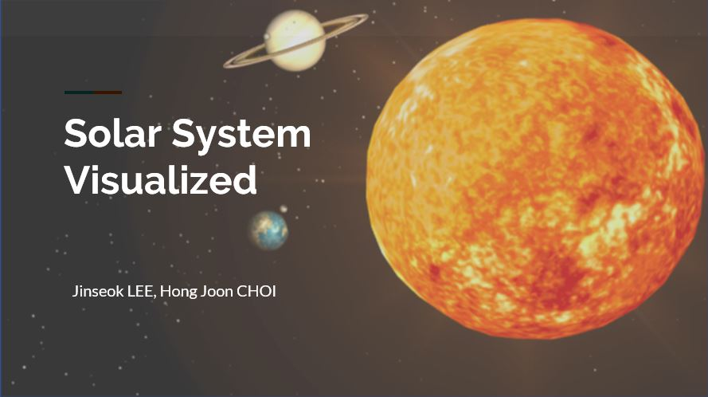

Fast Jigsaw Puzzle Solver
Python, Numpy, OpenCV https://github.com/hj2choi/fast_jigsaw_puzzle_solver fragment and randomly transform image and re-assemble them back to original image - used Euclidean distance for all-pairs image-borders similarity matrix (for all orientations and stitching directions) - modified Prim's MST algorithm for image assembly - implemented Priority Queue with Linked Hashmap - switch to parallel computation for large number of images

Interactive Solar System
JavaScript, WebGL, Three.js Live WebApp at hj2choi.github.io https://github.com/hj2choi/solar_system_webgl Solar System visualization with WebGL. - playback and camera controls - on/off graphic features (wireframes, grids, sperical skybox) - dynamically create asteroid clusters & graphical optimization - visual features: realistic reflective properties, cloud layer on Earth, planatery ring Jinseok Lee (CSE M.Phil student) built core logic and JSON data structure for planet and satellite revolution as well as some graphical features.guacamoli.ust.hk
Javascript, Node.js